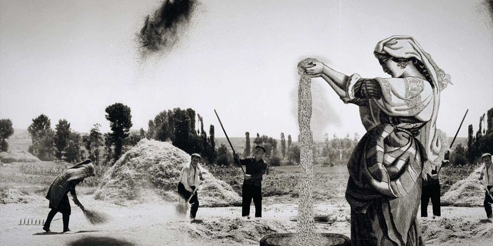

Welcome to Shaking Time Ministries. Our ministry recognizes that this
generation has been given an unprecedented gift for discerning biblical prophecy, and we are dedicated
to spreading these newly decoded messages all around the globe in preparation of the soon return of our
LORD Jesus Christ. This urgent Message simply cannot wait.
We take our name from the time of
the harvest that separates the wheat from the tares [Isa 17:4-7]. As heaven and earth shake, rattling the
institutions of man and overthrowing all that we have counted as strong, those who keep true to the Words
of Scripture will appear in stark contrast to those of weaker faith. We hope that the information you
encounter here will equip you with the knowledge to stand among the final remnant [Rom 9:27-28].
Please share what you find so that others can hear the Truth, also.
"See to it that you do not refuse Him who is speaking." [Heb 12:25]
Br. Evila Seh, Lead Minister